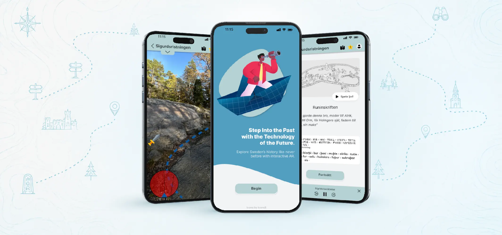
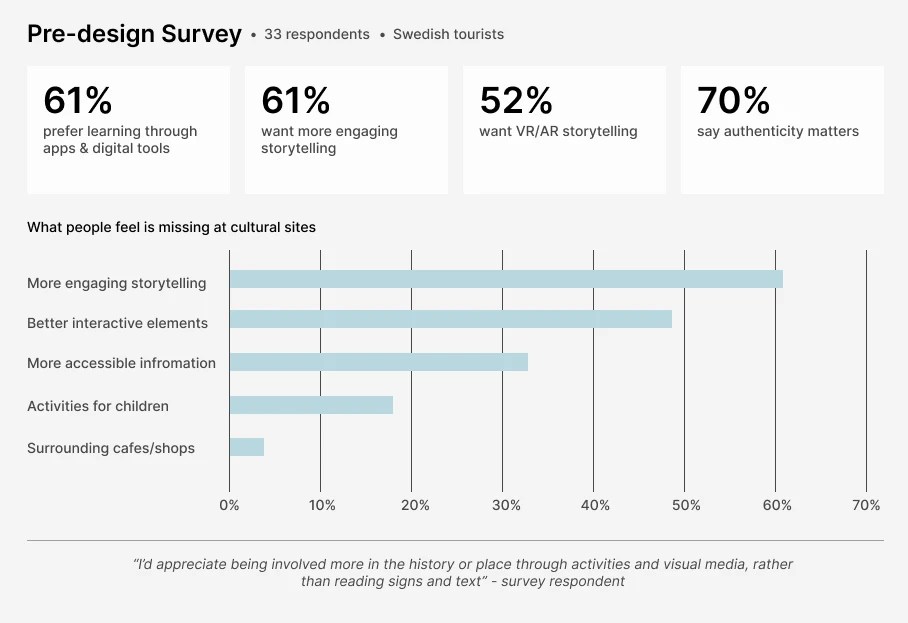
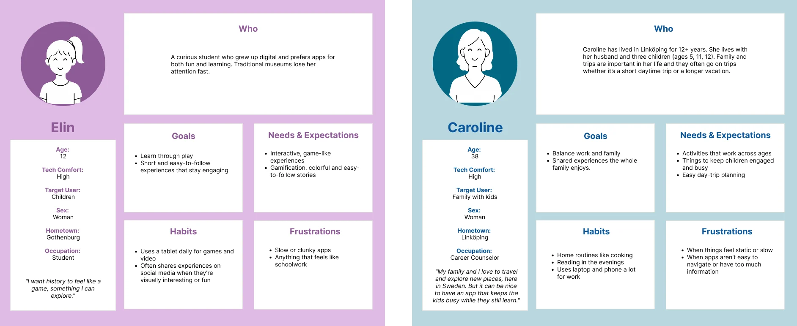
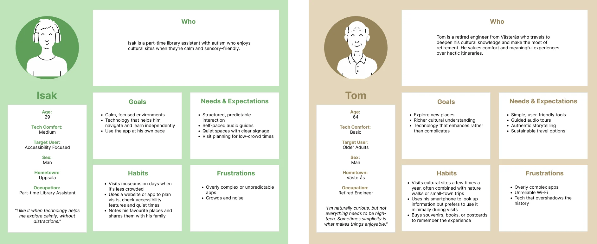
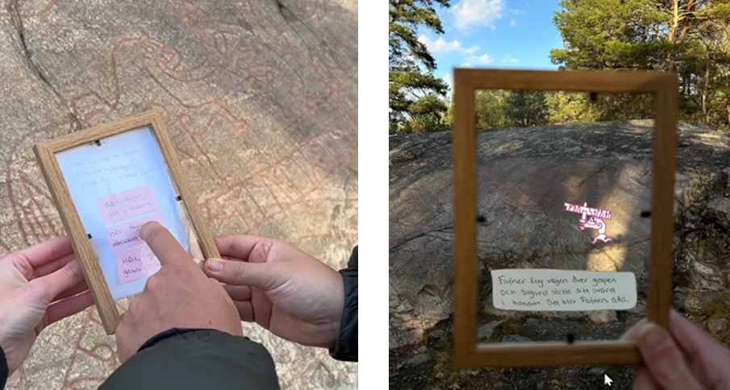
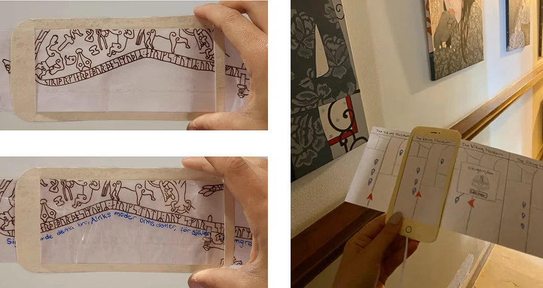
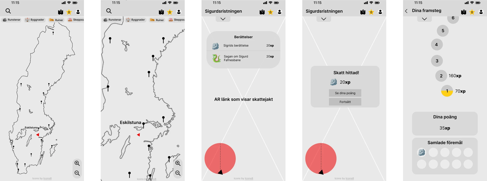

Sweden's historical landmarks aren't always engaging to visit, especially for tourists exploring their own country. The opportunity was to make visiting them more interactive and fun through augmented reality, for users of all ages and technical comfort levels.
Turista makes Sweden's cultural heritage more engaging through AR. The prototype focuses on a real site, the Sigurd rune carving. It lets visitors decode history rather than just read signs, through an AR rune translation, a location-based scavenger hunt, and a familiar map balancing immersion with authenticity and accessibility.
Turista was a collaborative project by a team of three. Within it, I contributed to the user research and built the final digital base prototype. I also led the structure of the evaluation process, designing how each prototype dimension was tested.
Research followed a participatory design approach, involving the target audience throughout. A survey of 33 respondents explored how people travel in Sweden: their patterns, preferences, and pain points. It showed a clear appetite for digital, engaging, and interactive experiences, which moved the project from a broad, divergent exploration toward a convergent direction.
A competitive analysis of existing museum and AR apps mapped how others structured navigation and interaction. In parallel, a teammate visited the Sigurd rune carving in person, photographed it, and gathered its history and background, so every piece of content in the prototype was real and specific to the site rather than placeholder.
The team also grounded the design in academic research on gamification, AR, and game mechanics. Studies showed that gamification and AR significantly improve cultural-heritage learning and engagement (Garcia et al., 2024; Hincapié et al., 2021), while stressing a balance between education and entertainment, and cultural sensitivity. This directly shaped a core principle that AR should enhance the history, not overshadow it.
Target audience:
Below are the survey findings and the four personas that narrowed the project's focus:

From the research, four personas were built, each representing a different age group and need, from a 12-year-old who wants history to feel like a game, to a 64-year-old who values simplicity over high-tech. They spanned a wide range of technical comfort, and included a visitor with sensory and accessibility needs.
Designing for all four is what pushed the app toward familiar, accessible interaction alongside its AR features, ensuring it worked for young, tech-comfortable users and older or less tech-confident ones alike.
Below are the four personas that shaped the design:


The divergent phase used rapid, low-cost prototypes, paper, transparent overlays, and Wizard-of-Oz AR simulations, each built to answer a specific design question and tested across age groups, from young children to a 61-year-old. Each prototype produced a finding that shaped the final design:
Findings: younger users embraced AR, while older users wanted simplicity and guidance. That split is exactly why the final design balanced both, immersive AR for those who want it, and a familiar map with audio for those who don't.
Below are the exploratory prototypes tested across age groups:


Before building the final AR prototype, a base prototype was created in Figma to test how everything worked together. It used the filter dimensions functionality, data, appearance, and spatial structure (Lim et al., 2008), with high interactivity and resolution and medium-to-high fidelity, to explore the experience as a whole rather than in separate pieces.
Testing showed that much of the prototype matched users' conceptual model (Norman, 2011): the map, categories, and reward system were easy to understand because the icons and behaviours felt familiar. Two clear gaps emerged, though, the app needed an introduction to give users a basic idea of what to do, and the storytelling needed to be broken up in a more engaging way.
Below is part of the Figma base prototype used to test the full flow:

The final prototype works in two modes, on-site and digital, so people can experience the heritage whether or not they can physically visit, answering the survey finding that time and distance stop many people from going. Its core features:
Swipe through the final prototype below:
Although the prototype maintained strong visual and structural consistency, transitions between the main app (Figma) and the AR functionality (Adobe Aero) caused slight user disruptions, due to load time and context-switching between the two tools. A real constraint worth naming, and something a production build would need to solve.